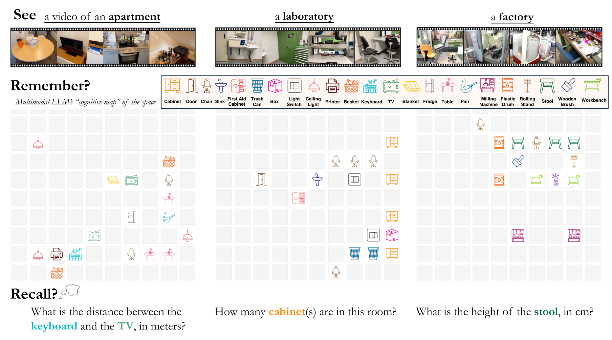
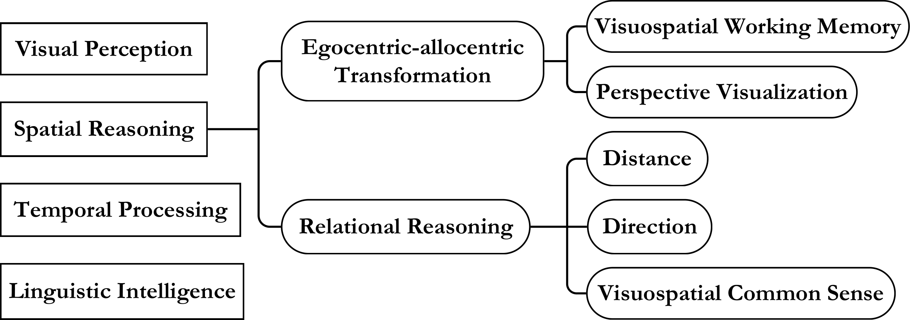
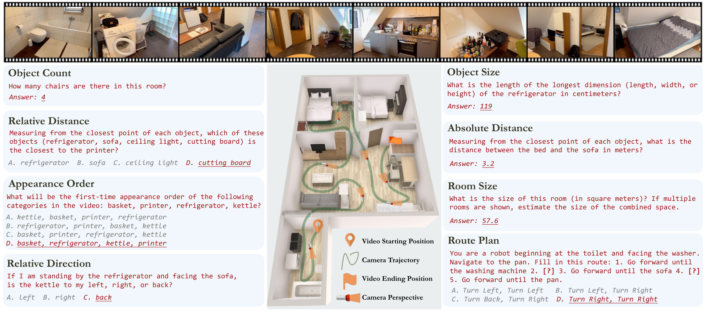
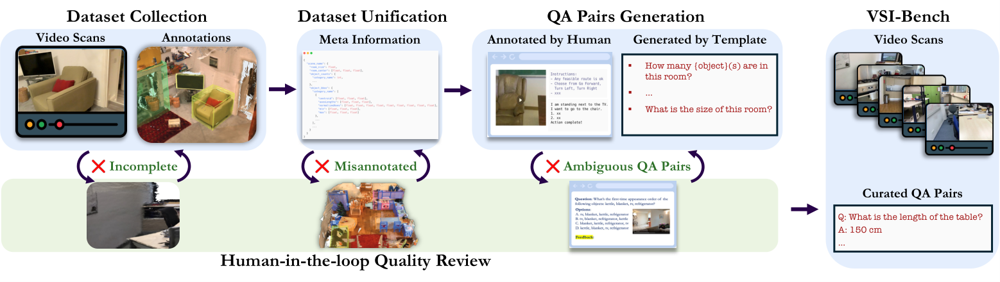
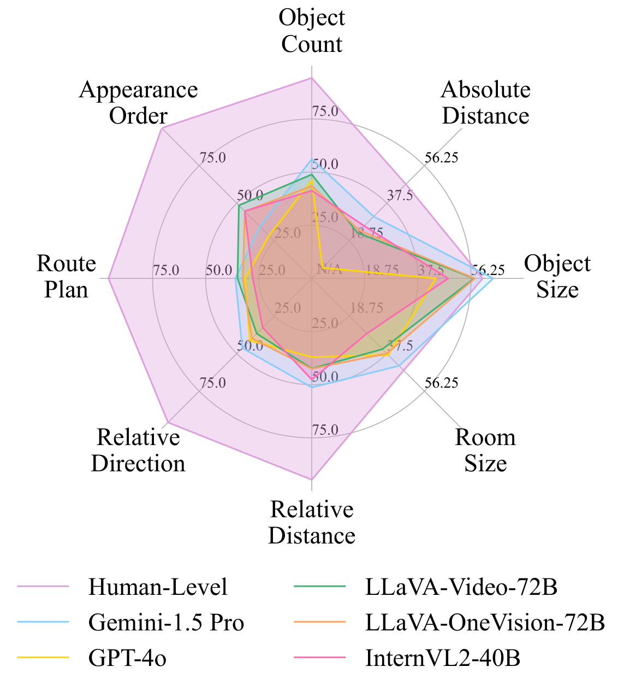
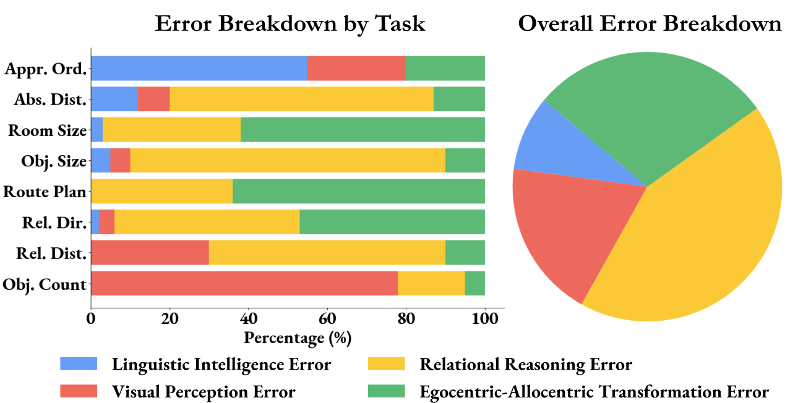
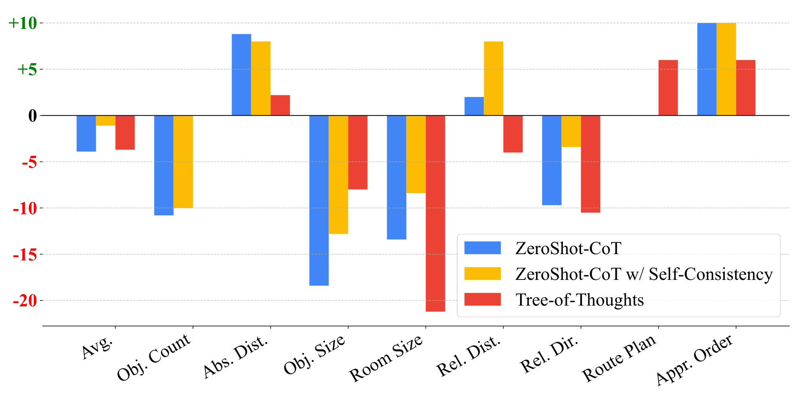
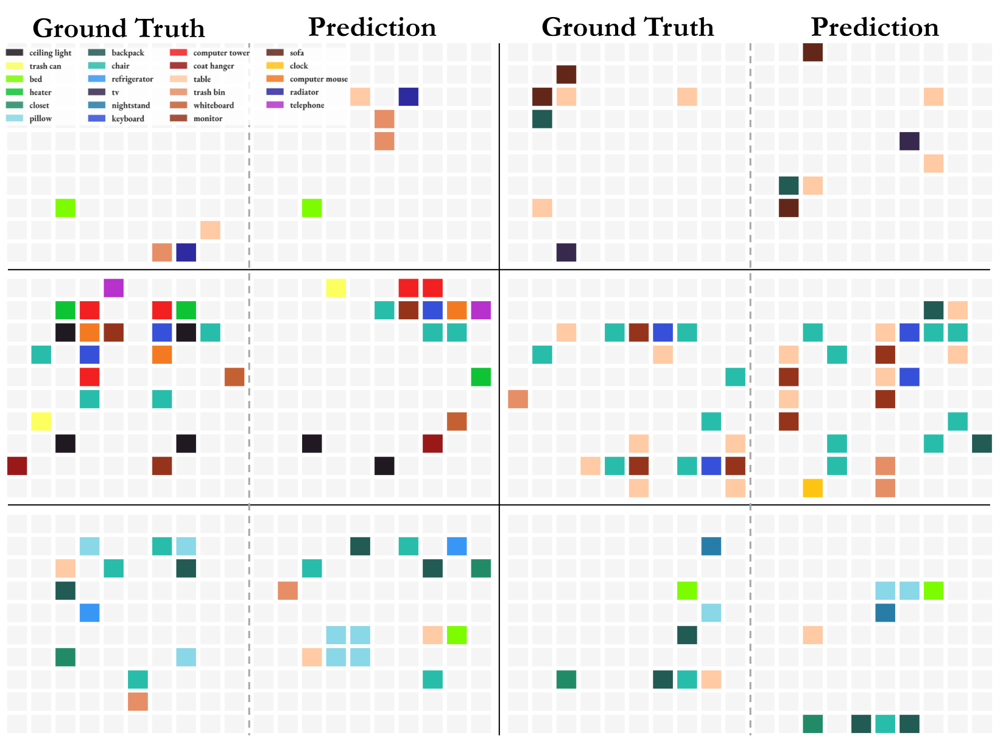
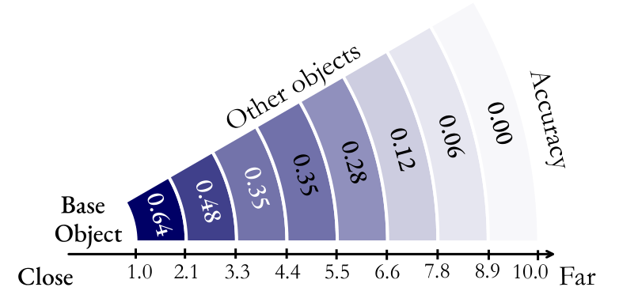

Thinking in Space
MLLM이 영상만 보고 공간을 기억·회상하며 "공간 안에서 사고"할 수 있는가 — VSI-Bench로 시각-공간 지능(visual-spatial intelligence)을 정량화한다.
Yang, Yang, Gupta, Han, Fei-Fei, Xie · NYU & Stanford · 10 min read
오늘 다룰 흐름
문제 정의 → 벤치마크(VSI-Bench) → 평가 결과 → 모델이 공간을 사고하는 방식을 언어적·시각적으로 해부 → 시사점.
- 동기: 영상으로 공간을 사고하기See · Remember · Recall
- Visual-Spatial Intelligence 분류perception · language · temporal · spatial reasoning
- VSI-Bench: 8 task / 3 type5,000+ QA · 288 indoor videos
- 벤치마크 구성 파이프라인ScanNet · ScanNet++ · ARKitScenes
- 평가: 인간 vs MLLM79.2 vs ~48.8 — 공간추론이 병목
- 언어적 사고: error 분석 & CoT 실패71% spatial error · prompting 역효과
- 시각적 사고: cognitive maplocal은 강, global은 약
- 시사점 & Referencescognitive map으로 거리추론 개선
영상을 보고 공간을 기억하고 회상할 수 있는가
인간은 방을 한 번 둘러보면 물체의 위치·크기를 머릿속에 재구성한다. 백만 단위 video로 학습한 MLLM도 같은 일을 할 수 있을까? — 모델에게 영상을 보게(See) 하고, 공간을 기억(Remember)·회상(Recall)하게 한다.

시각-공간 지능의 구성 요소
인지심리학에 기반해, VSI-Bench가 요구하는 능력을 네 축으로 나눈다. 그중 spatial reasoning이 핵심이며 두 갈래로 갈린다.

VSI-Bench: 8개 task, 3개 type
configurational(object count·relative distance·relative direction·route plan), measurement estimation(object size·room size·absolute distance), spatiotemporal(appearance order). 답 형식에 따라 MCA 또는 NA(수치).

벤치마크 구성 파이프라인
3D 실내 reconstruction 데이터셋(ScanNet·ScanNet++·ARKitScenes)을 통일된 meta 포맷으로 변환 → object 3D annotation으로 QA 자동 생성(+route plan은 사람) → 모든 단계에 human-in-the-loop 검수로 모호/오류 제거.

평가 결과: 경쟁력 있으나 인간 이하
15개 video MLLM을 zero-shot 평가. NA task는 새 지표 MRA(Mean Relative Accuracy)로 채점. 인간과의 격차는 크지만, 모델에서 새로운 시각-공간 지능이 emerge한다.

언어적 사고 ① 무엇이 틀리는가
최고 모델(Gemini-1.5 Pro)의 오답을 사람이 4가지 error type으로 분류. visual·linguistic·temporal 능력은 강한데, 발목을 잡는 건 spatial reasoning이다.

언어적 사고 ② CoT가 오히려 해롭다
언어 추론을 끌어올리는 대표 기법 3종(Zero-Shot CoT, Self-Consistency, Tree-of-Thoughts)을 적용 — 일반 video 벤치(VideoMME)에선 +1.6%인데, VSI-Bench에선 평균 성능이 떨어진다.

시각적 사고 ① cognitive map으로 들여다보기
모델에게 영상 속 물체 중심을 10×10 grid에 찍어 cognitive map(내부 공간 표현)을 그리게 한다 — 모델이 공간을 어떻게 "기억"하는지 시각화.

시각적 사고 ② local은 강, global은 약
cognitive map에서 물체 쌍의 거리 정확도를 거리 구간별로 측정 — 가까운 물체는 잘 기억하지만 멀어질수록 급격히 무너진다. 그리고 이 map을 명시적으로 생성시키면 거리 추론이 개선된다.

핵심 발견 4가지
모델이 공간을 어떻게 see·remember·recall 하는지에 대한 결론.
- ① 병목은 spatial reasoning. visual·linguistic·temporal 능력은 충분하지만, error의 ~71%가 공간추론에서 나온다.
- ② 언어 prompting은 공간추론에 해롭다. CoT·self-consistency·ToT가 일반 task에선 도움돼도 VSI-Bench에선 성능을 떨어뜨린다.
- ③ 모델은 local world model을 만든다. 인접 배치는 정확(0.64)하나 전역 지도는 약함 — 통합된 global model 부재.
- ④ cognitive map이 해법의 실마리. 명시적으로 mental map을 생성·사용하면 거리 추론이 +10%p 향상된다.
참고 문헌
원문과 데이터 출처.
- Yang, Yang, Gupta, Han, Fei-Fei, Xie. Thinking in Space: How Multimodal LLMs See, Remember, and Recall Spaces. CVPR 2025. arxiv.org/abs/2412.14171
- Dai et al. ScanNet. CVPR 2017 · Yeshwanth et al. ScanNet++. ICCV 2023 · Dehghan et al. ARKitScenes. NeurIPS 2021 — VSI-Bench의 영상·3D annotation 출처.
- Fu et al. Video-MME. 2024 — 일반 video 이해 비교 벤치마크.
- Tolman. Cognitive maps in rats and men. 1948 — cognitive map 개념의 기원.
- 모든 figure 출처 — Thinking in Space (CVPR 2025), Fig 1–9. 본 자료는 학습 정리용.